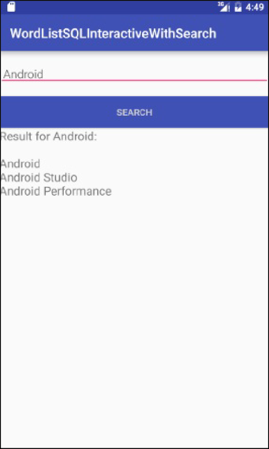

Ces travaux pratiques se base sur le cours de base pour les développeurs Android fourni par Google afin de les préparer pour le test de certification Associate Android Developer. Vous obtiendrez le plus de valeur de ce TP si vous travaillez successivement dans les codelabs.
Vous devriez être familier avec:
In this practical you will add an item to the options menu for searching the database, and an activity that allows users to enter a search string and displays the result of the search in a text view.
Why: Users should always be able to search the data on their own terms.
Note: The focus of this practical is not optimizing the UX of the search request, but showing you how to query the database.
You will make a copy of the finished WordListSQLInteractive app (or WordListSqlStarterCode if you didn't rename it; from a previous practical), call it WordListSQLInteractiveWithSearch, and add an activity that lets users search for partial and full words in the database. For example, entering "Android" will return all entries that contain the substring "Android".

In order to save you some work, this practical will build on an app you have already built. In a production environment, building on existing application code is a common developer task to add features or fix problems.
build.gradle file.Use the OptionsMenuSample code from your previous practicals if you need an example of how to do this.
<menu
xmlns:android="http://schemas.android.com/apk/res/android"
xmlns:app = "http://schemas.android.com/apk/res-auto"
xmlns:tools="http://schemas.android.com/tools"
tools:context="com.android.example.wordlistsqlsearchable.MainActivity">
<item
android:id="@+id/action_search"
android:title="Search..."
android:orderInCategory="1"
app:showAsAction="never" />
</menu>MainAcvitiy, inflate the menu by overriding onCreateOptionsMenu.@Override
public boolean onCreateOptionsMenu(Menu menu) {
getMenuInflater().inflate(R.menu.menu_main, menu);
return true;
}onOptionsItemSelected method. Switch on action_search, and just return true.@Override
public boolean onOptionsItemSelected(MenuItem item) {
switch (item.getItemId()) {
case R.id.action_search:
return true;
}
return super.onOptionsItemSelected(item);
}This layout is similar to activity_edit_word, so you can take advantage of existing code and copy it.
activity_editword and call it activity_search.xml.activity_search.xml, change the id's and strings to be representative of searching.onClick method for the button to showResult.TextView with an id of search_result, at least 300dp height, and 18sp font size.SearchActivity. If your create it by New > Android > Activity then DON'T generate the layout file because we created it in the previous task.TextView class variable mTextView.EditText class variable mEditWordView.WordListOpenHelper variable mDB.onCreate, initialize mDB with a new WordListOpenHelper(this).onCreate, initialize mTextView and mEditWordView to their respective views.public class SearchActivity extends AppCompatActivity {
private static final String TAG = EditWordActivity.class.getSimpleName();
private TextView mTextView;
private EditText mEditWordView;
private WordListOpenHelper mDB;
@Override
public void onCreate(Bundle savedInstanceState) {
super.onCreate(savedInstanceState);
setContentView(R.layout.activity_search);
mEditWordView = ((EditText) findViewById(R.id.search_word));
mTextView = ((TextView) findViewById(R.id.search_result));
mDB = new WordListOpenHelper(this);
}
}AndroidManifest.<activity
android:name="com.android.example.wordlistsqlsearchable.SearchActivity">
</activity>SearchActivity when the menu item is selected, insert code to start SearchActivity into the switch statement in the onOptionSelected() method in MainActivity.Intent intent = new Intent(getBaseContext(), SearchActivity.class);
startActivity(intent);SearchActivity is launched when the "Search" menu item is selected from the OptionsMenu.Your app crashed, because the onClick handler set for the Search button in the XML code doesn't exist yet. So you will build showResult next.
When the Search button is pressed, several things need to happen:
public void showResult(View view) in SearchActivity.mEditWordView, which is your search string. mTextView.mDB (mDB.search(word) and get back a SQlite database cursor. You will implement the search function in the next task.mTextView.SearchActivity, create the showResult function. It is public, takes a View argument, and returns nothing.String variable called word and initialize it with the contents of the input edit text view, mEditWordView .TextView; something like"Search term: " + wordCursor cursor = mDB.search(word);public void showResult(View view){
String word = mEditWordView.getText().toString();
mTextView.setText("Result for " + word + ":\n\n");
// Search for the word in the database.
Cursor cursor = mDB.search(word);
// Only process a non-null cursor with rows.
if (cursor != null & cursor.getCount() > 0) {
// You must move the cursor to the first item.
cursor.moveToFirst();
int index;
String result;
// Iterate over the cursor, while there are entries.
do {
// Don't guess at the column index.
// Get the index for the named column.
index = cursor.getColumnIndex(WordListOpenHelper.KEY_WORD);
// Get the value from the column for the current cursor.
result = cursor.getString(index);
// Add result to what's already in the text view.
mTextView.append(result + "\n");
} while (cursor.moveToNext()); // Returns true or false
cursor.close();
} // You should add some handling of null case. Right now, nothing happens.
}Your app will not run without at least a stub for search() implemented. Android Studio will create the stub for you. In the light bulb, choose create method.
WordListOpenHelper.String parameter, that returns a null cursor.showResult() is not exercised yet.The final step is to implement the actual searching of the database.
Inside the search() method, you need to build a query with the search string and send the query to the database. A more secure way to do this is by using parameters for each part of the query.
WHY: In the previous practical, for the query in WordListOpenHelper, you could build the query string directly and submit it as a rawQuery(), because you had full control over the contents of the query. As soon as you are handling user input, you must assume that it could be malicious.
Important: For security reasons, you should always validate user input before you build your query! You will learn more about security in the Security chapter and Security Tips.
The SQL query for searching for all entries in the wordlist matching a substring has this form:
SELECT * FROM WORD_LIST_TABLE WHERE KEY_WORD LIKE %searchString%;The parametrized form of the query method you will call looks like this:
Cursor query (String table, // The table to query
String[] columns, // The columns to return
String selection, // WHERE statement
String[] selectionArgs, // Arguments to WHERE
String groupBy, // Grouping filter. Not used.
String having, // Additional condition filter. Not used.
String orderBy) // Ordering. Setting to null uses default.See the SQLite Database Android and the documentation for various query()) methods. For the query in the search() method, you need to assign only the first four arguments.
WORD_LIST_TABLE constant.search(), create a variable for the columns. You need only the value from the KEY_WORD column.String[] columns = new String[]{KEY_WORD};% to the searchString parameter.searchString = "%" + searchString + "%";WHERE" as it's implied. Use a question mark for the argument to LIKE. Make sure you have the correct spacing.String where = KEY_WORD + " LIKE ?";searchString.String[] whereArgs = new String[]{searchString};Cursor cursor variable and initialize it to null.mReadable is not set yet.Here is the solution for the complete method:
public Cursor search (String searchString) {
String[] columns = new String[]{KEY_WORD};
searchString = "%" + searchString + "%";
String where = KEY_WORD + " LIKE ?";
String[]whereArgs = new String[]{searchString};
Cursor cursor = null;
try {
if (mReadableDB == null) {mReadableDB = getReadableDatabase();}
cursor = mReadableDB.query(WORD_LIST_TABLE, columns, where, whereArgs, null, null, null);
} catch (Exception e) {
Log.d(TAG, "SEARCH EXCEPTION! " + e);
}
return cursor;
}Solution code
Android Studio project: WordListSqlSearchable
In this chapter, you learned how to
SQLiteDatabase to store user data persistently. SQLiteOpenHelper to manage your database. Retrieve and display data from the databaseAndroid developer documentation: